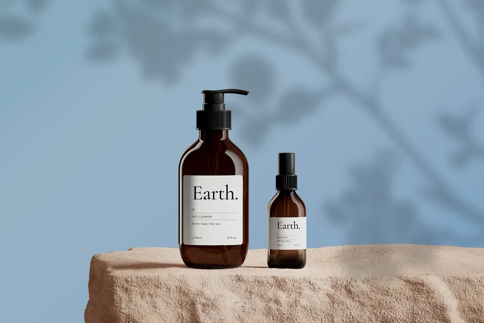
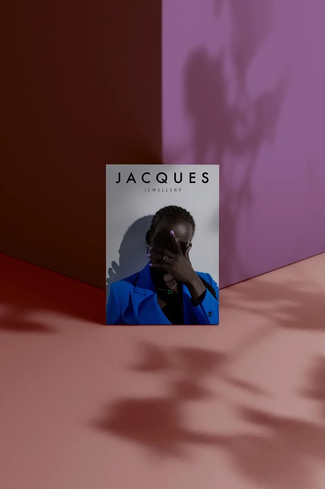
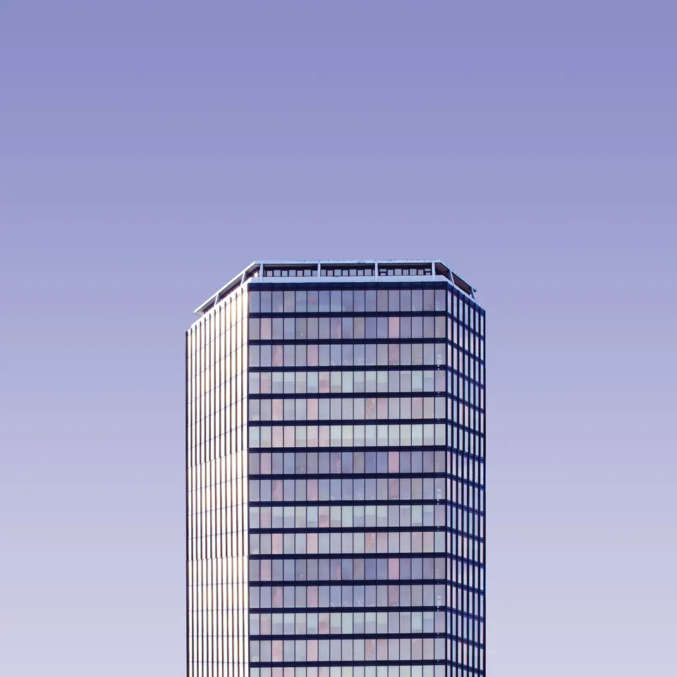
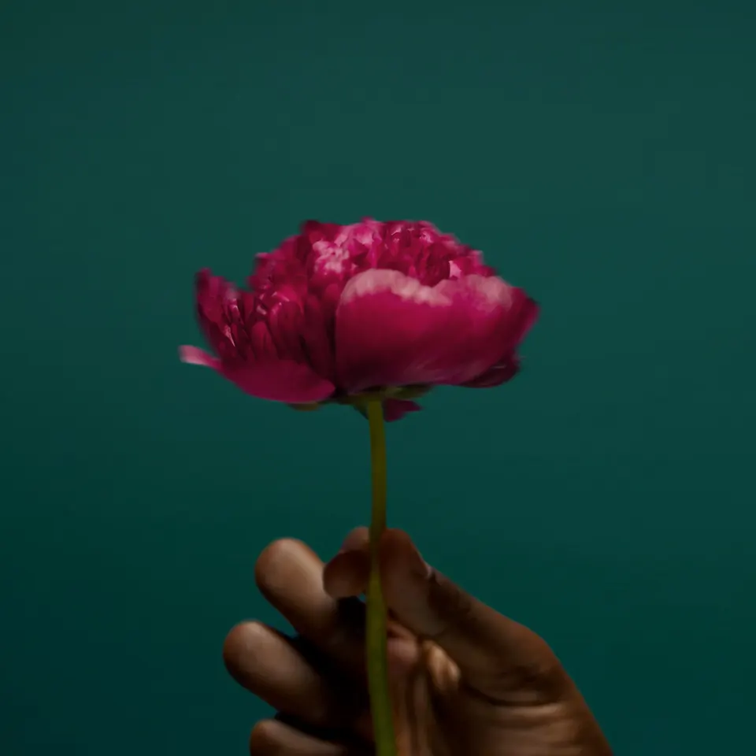
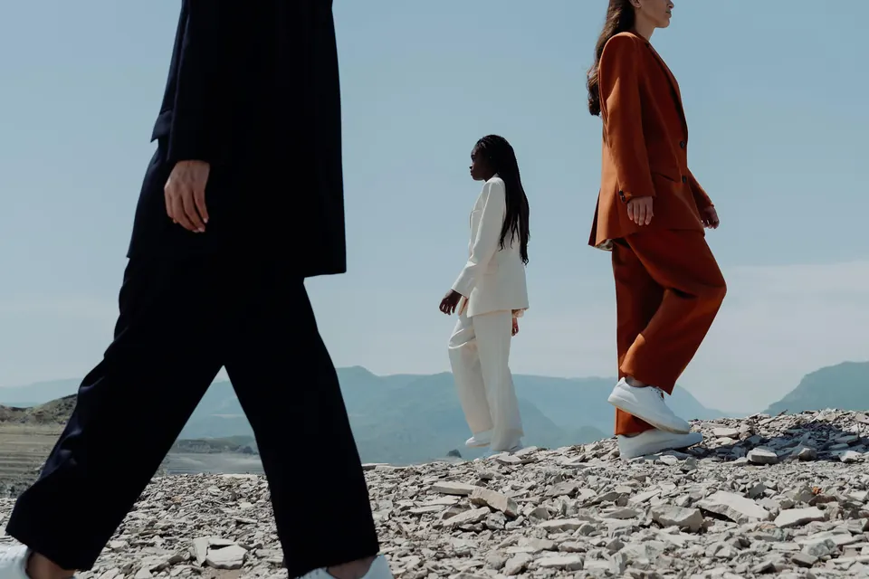
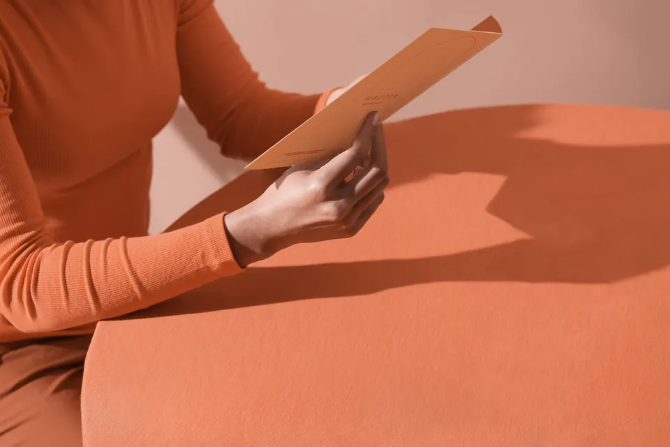

Portfolio 01On the road
The traveling wardrobe
Personal style, beautiful details, and what to wear when the itinerary includes a train, a museum, and a bookstore.
The portfolio
Style is another way of paying attention — to mood, place, color, history, and the particular person you want to be that day.
This opening portfolio preserves the original site’s fashion outline and gives it a more intentional editorial frame. Project details can be added as the collection develops.





